This package contains basic components 1D mechanical rotational drive trains.
| Name | Description |
|---|---|
| Flange fixed in housing at a given angle | |
| 1D-rotational component with inertia | |
| 1-dim. rotational rigid component without inertia, where right flange is rotated by a fixed angle with respect to left flange | |
| Linear 1D rotational spring | |
| 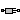 Damper | Linear 1D rotational damper |
| Linear 1D rotational spring and damper in parallel | |
| 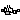 ElastoBacklash | Backlash connected in series to linear spring and damper (backlash is modeled with elasticity) |
| Coulomb friction in bearings | |
| Brake based on Coulomb friction | |
| Clutch based on Coulomb friction | |
| Series connection of freewheel and clutch | |
| 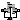 IdealGear | Ideal gear without inertia |
| Gear with mesh efficiency and bearing friction (stuck/rolling possible) | |
| IdealPlanetary | Ideal planetary gear box |
| Realistic model of a gearbox (based on LossyGear) | |
| Gearbox transforming rotational into translational motion | |
| Simple 1-dim. model of an ideal rolling wheel without inertia | |
| Initializes a flange with pre-defined angle, speed and angular acceleration (usually, this is reference data from a control bus) | |
| Definition of relative state variables |
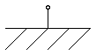
The flange of a 1D rotational mechanical system is fixed at an angle phi0 in the housing. May be used:
| Type | Name | Default | Description |
|---|---|---|---|
| Angle | phi0 | 0 | Fixed offset angle of housing [rad] |
| Type | Name | Description |
|---|---|---|
| Flange_b | flange | (right) flange fixed in housing |
model Fixed "Flange fixed in housing at a given angle" parameter SI.Angle phi0=0 "Fixed offset angle of housing"; Interfaces.Flange_b flange "(right) flange fixed in housing"; equation flange.phi = phi0; end Fixed;
 Modelica.Mechanics.Rotational.Components.Inertia
Modelica.Mechanics.Rotational.Components.Inertia

Rotational component with inertia and two rigidly connected flanges.
| Type | Name | Default | Description |
|---|---|---|---|
| Inertia | J | Moment of inertia [kg.m2] | |
| Initialization | |||
| Angle | phi.start | Absolute rotation angle of component [rad] | |
| AngularVelocity | w.start | Absolute angular velocity of component (= der(phi)) [rad/s] | |
| AngularAcceleration | a.start | Absolute angular acceleration of component (= der(w)) [rad/s2] | |
| Advanced | |||
| StateSelect | stateSelect | StateSelect.default | Priority to use phi and w as states |
| Type | Name | Description |
|---|---|---|
| Flange_a | flange_a | Left flange of shaft |
| Flange_b | flange_b | Right flange of shaft |
model Inertia "1D-rotational component with inertia"
import SI = Modelica.SIunits;
Rotational.Interfaces.Flange_a flange_a "Left flange of shaft";
Rotational.Interfaces.Flange_b flange_b "Right flange of shaft";
parameter SI.Inertia J(min=0, start=1) "Moment of inertia";
parameter StateSelect stateSelect=StateSelect.default
"Priority to use phi and w as states";
SI.Angle phi(stateSelect=stateSelect) "Absolute rotation angle of component";
SI.AngularVelocity w(stateSelect=stateSelect)
"Absolute angular velocity of component (= der(phi))";
SI.AngularAcceleration a
"Absolute angular acceleration of component (= der(w))";
equation
phi = flange_a.phi;
phi = flange_b.phi;
w = der(phi);
a = der(w);
J*a = flange_a.tau + flange_b.tau;
end Inertia;
Rotational component with two rigidly connected flanges without inertia. The right flange is rotated by the fixed angle "deltaPhi" with respect to the left flange.
| Type | Name | Default | Description |
|---|---|---|---|
| Angle | deltaPhi | 0 | Fixed rotation of left flange with respect to right flange (= flange_b.phi - flange_a.phi) [rad] |
| Type | Name | Description |
|---|---|---|
| Flange_a | flange_a | Flange of left shaft |
| Flange_b | flange_b | Flange of right shaft |
model Disc
"1-dim. rotational rigid component without inertia, where right flange is rotated by a fixed angle with respect to left flange"
import SI = Modelica.SIunits;
extends Rotational.Interfaces.PartialTwoFlanges;
parameter SI.Angle deltaPhi=0
"Fixed rotation of left flange with respect to right flange (= flange_b.phi - flange_a.phi)";
SI.Angle phi "Absolute rotation angle of component";
equation
flange_a.phi = phi - deltaPhi/2;
flange_b.phi = phi + deltaPhi/2;
0 = flange_a.tau + flange_b.tau;
end Disc;
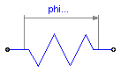
A linear 1D rotational spring. The component can be connected either between two inertias/gears to describe the shaft elasticity, or between a inertia/gear and the housing (component Fixed), to describe a coupling of the element with the housing via a spring.
| Type | Name | Default | Description |
|---|---|---|---|
| RotationalSpringConstant | c | Spring constant [N.m/rad] | |
| Angle | phi_rel0 | 0 | Unstretched spring angle [rad] |
| Initialization | |||
| Angle | phi_rel.start | 0 | Relative rotation angle (= flange_b.phi - flange_a.phi) [rad] |
| Type | Name | Description |
|---|---|---|
| Flange_a | flange_a | Left flange of compliant 1-dim. rotational component |
| Flange_b | flange_b | Right flange of compliant 1-dim. rotational component |
model Spring "Linear 1D rotational spring"
extends Modelica.Mechanics.Rotational.Interfaces.PartialCompliant;
parameter SI.RotationalSpringConstant c(final min=0, start=1.0e5)
"Spring constant";
parameter SI.Angle phi_rel0=0 "Unstretched spring angle";
equation
tau = c*(phi_rel - phi_rel0);
end Spring;
 Modelica.Mechanics.Rotational.Components.Damper
Modelica.Mechanics.Rotational.Components.Damper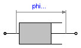
Linear, velocity dependent damper element. It can be either connected between an inertia or gear and the housing (component Fixed), or between two inertia/gear elements.
| Type | Name | Default | Description |
|---|---|---|---|
| RotationalDampingConstant | d | Damping constant [N.m.s/rad] | |
| Initialization | |||
| Angle | phi_rel.start | 0 | Relative rotation angle (= flange_b.phi - flange_a.phi) [rad] |
| AngularVelocity | w_rel.start | 0 | Relative angular velocity (= der(phi_rel)) [rad/s] |
| AngularAcceleration | a_rel.start | 0 | Relative angular acceleration (= der(w_rel)) [rad/s2] |
| Advanced | |||
| Angle | phi_nominal | 1e-4 | Nominal value of phi_rel (used for scaling) [rad] |
| StateSelect | stateSelect | StateSelect.prefer | Priority to use phi_rel and w_rel as states |
| Type | Name | Description |
|---|---|---|
| Flange_a | flange_a | Left flange of compliant 1-dim. rotational component |
| Flange_b | flange_b | Right flange of compliant 1-dim. rotational component |
model Damper "Linear 1D rotational damper"
extends Modelica.Mechanics.Rotational.Interfaces.PartialCompliantWithRelativeStates;
parameter SI.RotationalDampingConstant d(final min=0, start=0)
"Damping constant";
equation
tau = d*w_rel;
end Damper;
 Modelica.Mechanics.Rotational.Components.SpringDamper
Modelica.Mechanics.Rotational.Components.SpringDamper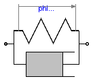
A spring and damper element connected in parallel. The component can be connected either between two inertias/gears to describe the shaft elasticity and damping, or between an inertia/gear and the housing (component Fixed), to describe a coupling of the element with the housing via a spring/damper.
| Type | Name | Default | Description |
|---|---|---|---|
| RotationalSpringConstant | c | Spring constant [N.m/rad] | |
| RotationalDampingConstant | d | Damping constant [N.m.s/rad] | |
| Angle | phi_rel0 | 0 | Unstretched spring angle [rad] |
| Initialization | |||
| Angle | phi_rel.start | 0 | Relative rotation angle (= flange_b.phi - flange_a.phi) [rad] |
| AngularVelocity | w_rel.start | 0 | Relative angular velocity (= der(phi_rel)) [rad/s] |
| AngularAcceleration | a_rel.start | 0 | Relative angular acceleration (= der(w_rel)) [rad/s2] |
| Advanced | |||
| Angle | phi_nominal | 1e-4 | Nominal value of phi_rel (used for scaling) [rad] |
| StateSelect | stateSelect | StateSelect.prefer | Priority to use phi_rel and w_rel as states |
| Type | Name | Description |
|---|---|---|
| Flange_a | flange_a | Left flange of compliant 1-dim. rotational component |
| Flange_b | flange_b | Right flange of compliant 1-dim. rotational component |
model SpringDamper
"Linear 1D rotational spring and damper in parallel"
import SI = Modelica.SIunits;
parameter SI.RotationalSpringConstant c(final min=0, start=1.0e5)
"Spring constant";
parameter SI.RotationalDampingConstant d(final min=0, start=0)
"Damping constant";
parameter SI.Angle phi_rel0=0 "Unstretched spring angle";
extends Modelica.Mechanics.Rotational.Interfaces.PartialCompliantWithRelativeStates;
equation
tau = c*(phi_rel - phi_rel0) + d*w_rel;
end SpringDamper;
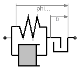
This element consists of a backlash element connected in series to a spring and damper element which are connected in parallel. The spring constant shall be non-zero, otherwise the component cannot be used.
In combination with components IdealGear, the ElastoBacklash model can be used to model a gear box with backlash, elasticity and damping.
During initialization, the backlash characteristic is replaced by a continuous approximation in the backlash region, in order to reduce problems during initialization, especially for inverse models.
If the backlash b is smaller as 1e-10 rad (especially, if b=0), then the backlash is ignored and the component reduces to a spring/damper element in parallel.
In the backlash region (-b/2 ≤ flange_b.phi - flange_a.phi - phi_rel0 ≤ b/2) no torque is exerted (flange_b.tau = 0). Outside of this region, contact is present and the contact torque is basically computed with a linear spring/damper characteristic:
desiredContactTorque = c*phi_contact + d*der(phi_contact) phi_contact = phi_rel - phi_rel0 - b/2 if phi_rel - phi_rel0 > b/2 = phi_rel - phi_rel0 + b/2 if phi_rel - phi_rel0 < -b/2 phi_rel = flange_b.phi - flange_a.phi;This torque characteristic leads to the following difficulties:
In the literature there are several proposals to fix problem (2). However, there seems to be no proposal to avoid sticking. For this reason, the most simple approach is used in the ElastoBacklash model, to fix both problems by slight changes to the linear spring/damper characteristic:
// Torque characteristic when phi_rel > phi_rel0
if phi_rel - phi_rel0 < b/2 then
tau_c = 0; // spring torque
tau_d = 0; // damper torque
flange_b.tau = 0;
else
tau_c = c*(phi_rel - phi_rel0); // spring torque
tau_d = d*der(phi_rel); // damper torque
flange_b.tau = if tau_c + tau_d ≤ 0 then 0 else tau_c + min( tau_c, tau_d );
end if;
Note, when sticking would occur (tau_c + tau_d ≤ 0), then the contact torque is explicitly set to zero. The "min(tau_c, tau_d)" part in the if-expression, limits the damping torque when it is pushing. This means that at the start of the contact (phi_rel - phi_rel0 = b/2), the damping torque is zero and is continuous. The effect of both modifications is that the absolute value of the damping torque is always limited by the absolute value of the spring torque: |tau_d| ≤ |tau_c|.
In the next figure, a typical simulation with the ElastoBacklash model is shown (Examples.Backlash) where the different effects are visualized:

| Type | Name | Default | Description |
|---|---|---|---|
| RotationalSpringConstant | c | Spring constant (c > 0 required) [N.m/rad] | |
| RotationalDampingConstant | d | Damping constant [N.m.s/rad] | |
| Angle | b | 0 | Total backlash [rad] |
| Angle | phi_rel0 | 0 | Unstretched spring angle [rad] |
| Initialization | |||
| Angle | phi_rel.start | 0 | Relative rotation angle (= flange_b.phi - flange_a.phi) [rad] |
| AngularVelocity | w_rel.start | 0 | Relative angular velocity (= der(phi_rel)) [rad/s] |
| AngularAcceleration | a_rel.start | 0 | Relative angular acceleration (= der(w_rel)) [rad/s2] |
| Advanced | |||
| Angle | phi_nominal | 1e-4 | Nominal value of phi_rel (used for scaling) [rad] |
| StateSelect | stateSelect | StateSelect.prefer | Priority to use phi_rel and w_rel as states |
| Type | Name | Description |
|---|---|---|
| Flange_a | flange_a | Left flange of compliant 1-dim. rotational component |
| Flange_b | flange_b | Right flange of compliant 1-dim. rotational component |
model ElastoBacklash
"Backlash connected in series to linear spring and damper (backlash is modeled with elasticity)"
import SI = Modelica.SIunits;
parameter SI.RotationalSpringConstant c(final min=Modelica.Constants.small, start=1.0e5)
"Spring constant (c > 0 required)";
parameter SI.RotationalDampingConstant d(final min=0, start = 0)
"Damping constant";
parameter SI.Angle b(final min=0) = 0 "Total backlash";
parameter SI.Angle phi_rel0=0 "Unstretched spring angle";
extends Modelica.Mechanics.Rotational.Interfaces.PartialCompliantWithRelativeStates;
protected
final parameter SI.Angle bMax = b/2
"Backlash in range bMin <= phi_rel - phi_rel0 <= bMax";
final parameter SI.Angle bMin = -bMax
"Backlash in range bMin <= phi_rel - phi_rel0 <= bMax";
SI.Torque tau_c;
SI.Torque tau_d;
SI.Angle phi_diff = phi_rel - phi_rel0;
// A minimum backlash is defined in order to avoid an infinite
// number of state events if backlash b is set to zero.
constant SI.Angle bEps = 1e-10 "minimum backlash";
equation
if initial() then
/* During initialization the characteristic is modified, in order that
it is a strict monoton rising function. Otherwise, initialization might
result in a singular system when the characteristic has to be
inverted. The characteristic is modified in the range 1.5*bMin <= phi_rel - phi_rel0 <= 1.5 bMax,
so that in this range a linear characteristic is present that approaches the original
function continuously at its limits, e.g.,
original: tau(1.5*bMax) = c*(phi_diff - bMax)
= c*(0.5*bMax)
initial : tau(1.5*bMax) = (c/3)*phi_diff
= (c/3)*(3/2)*bMax
= (c/2)*bMax
*/
tau_c = if phi_diff > 1.5*bMax then c*(phi_diff - bMax) else
if phi_diff < 1.5*bMin then c*(phi_diff - bMin) else (c/3)*phi_diff;
tau_d = d*w_rel;
tau = tau_c + tau_d;
else
/*
if abs(b) <= bEps then
tau_c = c*phi_diff;
tau_d = d*w_rel;
tau = tau_c + tau_d;
elseif phi_diff > bMax then
tau_c = c*(phi_diff - bMax);
tau_d = d*w_rel;
tau = smooth(0, noEvent(if tau_c + tau_d <= 0 then 0 else tau_c + min(tau_c,tau_d)));
elseif phi_diff < bMin then
tau_c = c*(phi_diff - bMin);
tau_d = d*w_rel;
tau = smooth(0, noEvent(if tau_c + tau_d >= 0 then 0 else tau_c + max(tau_c,tau_d)));
else
tau_c = 0;
tau_d = 0;
tau = 0;
end if;
This is written in the form below, in order that parameter "b"
is not evaluated during translation (i.e., in the above form
it cannot be changed anymore after translation).
*/
tau_c = if abs(b) <= bEps then c*phi_diff else
if phi_diff > bMax then c*(phi_diff - bMax) else
if phi_diff < bMin then c*(phi_diff - bMin) else 0;
tau_d = d*w_rel;
tau = if abs(b) <= bEps then tau_c + tau_d else
if phi_diff > bMax then
smooth(0, noEvent(if tau_c + tau_d <= 0 then 0 else tau_c + min(tau_c,tau_d))) else
if phi_diff < bMin then
smooth(0, noEvent(if tau_c + tau_d >= 0 then 0 else tau_c + max(tau_c,tau_d))) else 0;
end if;
end ElastoBacklash;

This element describes Coulomb friction in bearings, i.e., a frictional torque acting between a flange and the housing. The positive sliding friction torque "tau" has to be defined by table "tau_pos" as function of the absolute angular velocity "w". E.g.
w | tau
---+-----
0 | 0
1 | 2
2 | 5
3 | 8
gives the following table:
tau_pos = [0, 0; 1, 2; 2, 5; 3, 8];
Currently, only linear interpolation in the table is supported. Outside of the table, extrapolation through the last two table entries is used. It is assumed that the negative sliding friction force has the same characteristic with negative values. Friction is modelled in the following way:
When the absolute angular velocity "w" is not zero, the friction torque is a function of w and of a constant normal force. This dependency is defined via table tau_pos and can be determined by measurements, e.g. by driving the gear with constant velocity and measuring the needed motor torque (= friction torque).
When the absolute angular velocity becomes zero, the elements connected by the friction element become stuck, i.e., the absolute angle remains constant. In this phase the friction torque is calculated from a torque balance due to the requirement, that the absolute acceleration shall be zero. The elements begin to slide when the friction torque exceeds a threshold value, called the maximum static friction torque, computed via:
maximum_static_friction = peak * sliding_friction(w=0) (peak >= 1)
This procedure is implemented in a "clean" way by state events and leads to continuous/discrete systems of equations if friction elements are dynamically coupled which have to be solved by appropriate numerical methods. The method is described in:
More precise friction models take into account the elasticity of the material when the two elements are "stuck", as well as other effects, like hysteresis. This has the advantage that the friction element can be completely described by a differential equation without events. The drawback is that the system becomes stiff (about 10-20 times slower simulation) and that more material constants have to be supplied which requires more sophisticated identification. For more details, see the following references, especially (Armstrong and Canudas de Witt 1996):
| Type | Name | Default | Description |
|---|---|---|---|
| Boolean | useSupport | false | = true, if support flange enabled, otherwise implicitly grounded |
| Real | tau_pos[:, 2] | [0, 1] | [w,tau] Positive sliding friction characteristic (w>=0) |
| Real | peak | 1 | peak*tau_pos[1,2] = Maximum friction torque for w==0 |
| Initialization | |||
| Boolean | startForward.start | false | true, if w_rel=0 and start of forward sliding |
| Boolean | startBackward.start | false | true, if w_rel=0 and start of backward sliding |
| Boolean | locked.start | false | true, if w_rel=0 and not sliding |
| Advanced | |||
| AngularVelocity | w_small | 1.0e10 | Relative angular velocity near to zero if jumps due to a reinit(..) of the velocity can occur (set to low value only if such impulses can occur) [rad/s] |
| Type | Name | Description |
|---|---|---|
| Flange_a | flange_a | Flange of left shaft |
| Flange_b | flange_b | Flange of right shaft |
| Support | support | Support/housing of component |
model BearingFriction "Coulomb friction in bearings "
extends Rotational.Interfaces.PartialElementaryTwoFlangesAndSupport;
parameter Real tau_pos[:, 2]=[0, 1]
"[w,tau] Positive sliding friction characteristic (w>=0)";
parameter Real peak(final min=1) = 1
"peak*tau_pos[1,2] = Maximum friction torque for w==0";
extends Rotational.Interfaces.PartialFriction;
SI.Angle phi "Angle between shaft flanges (flange_a, flange_b) and support";
SI.AngularVelocity w "Absolute angular velocity of flange_a and flange_b";
SI.AngularAcceleration a
"Absolute angular acceleration of flange_a and flange_b";
equation
// Constant auxiliary variables
tau0 = Modelica.Math.tempInterpol1(0, tau_pos, 2);
tau0_max = peak*tau0;
free = false;
phi = flange_a.phi - internalSupport.phi;
flange_b.phi = flange_a.phi;
// Angular velocity and angular acceleration of flanges
w = der(phi);
a = der(w);
w_relfric = w;
a_relfric = a;
// Friction torque
flange_a.tau + flange_b.tau - tau = 0;
// Friction torque
tau = if locked then sa*unitTorque else (if startForward then
Modelica.Math.tempInterpol1(w, tau_pos, 2) else if startBackward then -
Modelica.Math.tempInterpol1(-w, tau_pos, 2) else if pre(mode) == Forward then
Modelica.Math.tempInterpol1(w, tau_pos, 2) else -
Modelica.Math.tempInterpol1(-w, tau_pos, 2));
end BearingFriction;
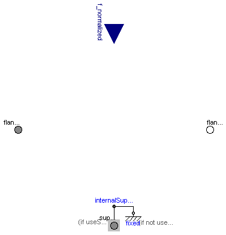
This component models a brake, i.e., a component where a frictional torque is acting between the housing and a flange and a controlled normal force presses the flange to the housing in order to increase friction. The normal force fn has to be provided as input signal f_normalized in a normalized form (0 ≤ f_normalized ≤ 1), fn = fn_max*f_normalized, where fn_max has to be provided as parameter. Friction in the brake is modelled in the following way:
When the absolute angular velocity "w" is not zero, the friction torque is a function of the velocity dependent friction coefficient mue(w) , of the normal force "fn", and of a geometry constant "cgeo" which takes into account the geometry of the device and the assumptions on the friction distributions:
frictional_torque = cgeo * mue(w) * fn
Typical values of coefficients of friction:
dry operation : mue = 0.2 .. 0.4
operating in oil: mue = 0.05 .. 0.1
When plates are pressed together, where ri is the inner radius, ro is the outer radius and N is the number of friction interfaces, the geometry constant is calculated in the following way under the assumption of a uniform rate of wear at the interfaces:
cgeo = N*(r0 + ri)/2
The positive part of the friction characteristic mue(w), w >= 0, is defined via table mue_pos (first column = w, second column = mue). Currently, only linear interpolation in the table is supported.
When the absolute angular velocity becomes zero, the elements connected by the friction element become stuck, i.e., the absolute angle remains constant. In this phase the friction torque is calculated from a torque balance due to the requirement, that the absolute acceleration shall be zero. The elements begin to slide when the friction torque exceeds a threshold value, called the maximum static friction torque, computed via:
frictional_torque = peak * cgeo * mue(w=0) * fn (peak >= 1)
This procedure is implemented in a "clean" way by state events and leads to continuous/discrete systems of equations if friction elements are dynamically coupled. The method is described in:
More precise friction models take into account the elasticity of the material when the two elements are "stuck", as well as other effects, like hysteresis. This has the advantage that the friction element can be completely described by a differential equation without events. The drawback is that the system becomes stiff (about 10-20 times slower simulation) and that more material constants have to be supplied which requires more sophisticated identification. For more details, see the following references, especially (Armstrong and Canudas de Witt 1996):
| Type | Name | Default | Description |
|---|---|---|---|
| Boolean | useSupport | false | = true, if support flange enabled, otherwise implicitly grounded |
| Real | mue_pos[:, 2] | [0, 0.5] | [w,mue] positive sliding friction coefficient (w_rel>=0) |
| Real | peak | 1 | peak*mue_pos[1,2] = maximum value of mue for w_rel==0 |
| Real | cgeo | 1 | Geometry constant containing friction distribution assumption |
| Force | fn_max | Maximum normal force [N] | |
| Initialization | |||
| Boolean | startForward.start | false | true, if w_rel=0 and start of forward sliding |
| Boolean | startBackward.start | false | true, if w_rel=0 and start of backward sliding |
| Boolean | locked.start | false | true, if w_rel=0 and not sliding |
| Advanced | |||
| AngularVelocity | w_small | 1.0e10 | Relative angular velocity near to zero if jumps due to a reinit(..) of the velocity can occur (set to low value only if such impulses can occur) [rad/s] |
| Type | Name | Description |
|---|---|---|
| Flange_a | flange_a | Flange of left shaft |
| Flange_b | flange_b | Flange of right shaft |
| Support | support | Support/housing of component |
| input RealInput | f_normalized | Normalized force signal 0..1 (normal force = fn_max*f_normalized; brake is active if > 0) |
model Brake "Brake based on Coulomb friction "
extends Rotational.Interfaces.PartialElementaryTwoFlangesAndSupport;
parameter Real mue_pos[:, 2]=[0, 0.5]
"[w,mue] positive sliding friction coefficient (w_rel>=0)";
parameter Real peak(final min=1) = 1
"peak*mue_pos[1,2] = maximum value of mue for w_rel==0";
parameter Real cgeo(final min=0) = 1
"Geometry constant containing friction distribution assumption";
parameter SI.Force fn_max(final min=0, start=1) "Maximum normal force";
extends Rotational.Interfaces.PartialFriction;
SI.Angle phi "Angle between shaft flanges (flange_a, flange_b) and support";
SI.AngularVelocity w "Absolute angular velocity of flange_a and flange_b";
SI.AngularAcceleration a
"Absolute angular acceleration of flange_a and flange_b";
Real mue0 "Friction coefficient for w=0 and forward sliding";
SI.Force fn "Normal force (=fn_max*f_normalized)";
// Constant auxiliary variable
Modelica.Blocks.Interfaces.RealInput f_normalized
"Normalized force signal 0..1 (normal force = fn_max*f_normalized; brake is active if > 0)";
equation
mue0 = Modelica.Math.tempInterpol1(0, mue_pos, 2);
phi = flange_a.phi - internalSupport.phi;
flange_b.phi = flange_a.phi;
// Angular velocity and angular acceleration of flanges flange_a and flange_b
w = der(phi);
a = der(w);
w_relfric = w;
a_relfric = a;
// Friction torque, normal force and friction torque for w_rel=0
flange_a.tau + flange_b.tau - tau = 0;
fn = fn_max*f_normalized;
tau0 = mue0*cgeo*fn;
tau0_max = peak*tau0;
free = fn <= 0;
// friction torque
tau = if locked then sa*unitTorque else if free then 0 else cgeo*fn*(if startForward then
Modelica.Math.tempInterpol1(w, mue_pos, 2) else if startBackward then
-Modelica.Math.tempInterpol1(-w, mue_pos, 2) else if pre(mode) ==
Forward then Modelica.Math.tempInterpol1(w, mue_pos, 2) else -
Modelica.Math.tempInterpol1(-w, mue_pos, 2));
end Brake;
 Modelica.Mechanics.Rotational.Components.Clutch
Modelica.Mechanics.Rotational.Components.Clutch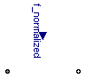
This component models a clutch, i.e., a component with two flanges where friction is present between the two flanges and these flanges are pressed together via a normal force. The normal force fn has to be provided as input signal f_normalized in a normalized form (0 ≤ f_normalized ≤ 1), fn = fn_max*f_normalized, where fn_max has to be provided as parameter. Friction in the clutch is modelled in the following way:
When the relative angular velocity is not zero, the friction torque is a function of the velocity dependent friction coefficient mue(w_rel) , of the normal force "fn", and of a geometry constant "cgeo" which takes into account the geometry of the device and the assumptions on the friction distributions:
frictional_torque = cgeo * mue(w_rel) * fn
Typical values of coefficients of friction:
dry operation : mue = 0.2 .. 0.4
operating in oil: mue = 0.05 .. 0.1
When plates are pressed together, where ri is the inner radius, ro is the outer radius and N is the number of friction interfaces, the geometry constant is calculated in the following way under the assumption of a uniform rate of wear at the interfaces:
cgeo = N*(r0 + ri)/2
The positive part of the friction characteristic mue(w_rel), w_rel >= 0, is defined via table mue_pos (first column = w_rel, second column = mue). Currently, only linear interpolation in the table is supported.
When the relative angular velocity becomes zero, the elements connected by the friction element become stuck, i.e., the relative angle remains constant. In this phase the friction torque is calculated from a torque balance due to the requirement, that the relative acceleration shall be zero. The elements begin to slide when the friction torque exceeds a threshold value, called the maximum static friction torque, computed via:
frictional_torque = peak * cgeo * mue(w_rel=0) * fn (peak >= 1)
This procedure is implemented in a "clean" way by state events and leads to continuous/discrete systems of equations if friction elements are dynamically coupled. The method is described in:
More precise friction models take into account the elasticity of the material when the two elements are "stuck", as well as other effects, like hysteresis. This has the advantage that the friction element can be completely described by a differential equation without events. The drawback is that the system becomes stiff (about 10-20 times slower simulation) and that more material constants have to be supplied which requires more sophisticated identification. For more details, see the following references, especially (Armstrong and Canudas de Witt 1996):
| Type | Name | Default | Description |
|---|---|---|---|
| Real | mue_pos[:, 2] | [0, 0.5] | [w,mue] positive sliding friction coefficient (w_rel>=0) |
| Real | peak | 1 | peak*mue_pos[1,2] = maximum value of mue for w_rel==0 |
| Real | cgeo | 1 | Geometry constant containing friction distribution assumption |
| Force | fn_max | Maximum normal force [N] | |
| Initialization | |||
| Angle | phi_rel.start | 0 | Relative rotation angle (= flange_b.phi - flange_a.phi) [rad] |
| AngularVelocity | w_rel.start | 0 | Relative angular velocity (= der(phi_rel)) [rad/s] |
| AngularAcceleration | a_rel.start | 0 | Relative angular acceleration (= der(w_rel)) [rad/s2] |
| Boolean | startForward.start | false | true, if w_rel=0 and start of forward sliding |
| Boolean | startBackward.start | false | true, if w_rel=0 and start of backward sliding |
| Boolean | locked.start | false | true, if w_rel=0 and not sliding |
| Advanced | |||
| Angle | phi_nominal | 1e-4 | Nominal value of phi_rel (used for scaling) [rad] |
| StateSelect | stateSelect | StateSelect.prefer | Priority to use phi_rel and w_rel as states |
| AngularVelocity | w_small | 1.0e10 | Relative angular velocity near to zero if jumps due to a reinit(..) of the velocity can occur (set to low value only if such impulses can occur) [rad/s] |
| Type | Name | Description |
|---|---|---|
| Flange_a | flange_a | Left flange of compliant 1-dim. rotational component |
| Flange_b | flange_b | Right flange of compliant 1-dim. rotational component |
| input RealInput | f_normalized | Normalized force signal 0..1 (normal force = fn_max*f_normalized; clutch is engaged if > 0) |
model Clutch "Clutch based on Coulomb friction "
extends Modelica.Mechanics.Rotational.Interfaces.PartialCompliantWithRelativeStates;
parameter Real mue_pos[:, 2]=[0, 0.5]
"[w,mue] positive sliding friction coefficient (w_rel>=0)";
parameter Real peak(final min=1) = 1
"peak*mue_pos[1,2] = maximum value of mue for w_rel==0";
parameter Real cgeo(final min=0) = 1
"Geometry constant containing friction distribution assumption";
parameter SI.Force fn_max(final min=0, start=1) "Maximum normal force";
Modelica.SIunits.AngularAcceleration a_rel(start=0)
"Relative angular acceleration (= der(w_rel))";
extends Rotational.Interfaces.PartialFriction;
Real mue0 "Friction coefficient for w=0 and forward sliding";
SI.Force fn "Normal force (fn=fn_max*f_normalized)";
Modelica.Blocks.Interfaces.RealInput f_normalized
"Normalized force signal 0..1 (normal force = fn_max*f_normalized; clutch is engaged if > 0)";
equation
// Constant auxiliary variable
mue0 = Modelica.Math.tempInterpol1(0, mue_pos, 2);
// Relative quantities
w_relfric = w_rel;
a_relfric = a_rel;
// Normal force and friction torque for w_rel=0
fn = fn_max*f_normalized;
free = fn <= 0;
tau0 = mue0*cgeo*fn;
tau0_max = peak*tau0;
// friction torque
tau = if locked then sa*unitTorque else if free then 0 else cgeo*fn*(if startForward then
Modelica.Math.tempInterpol1(w_rel, mue_pos, 2) else if
startBackward then -Modelica.Math.tempInterpol1(-w_rel, mue_pos, 2) else
if pre(mode) == Forward then Modelica.Math.tempInterpol1(w_rel, mue_pos,
2) else -Modelica.Math.tempInterpol1(-w_rel, mue_pos, 2));
end Clutch;
 Modelica.Mechanics.Rotational.Components.OneWayClutch
Modelica.Mechanics.Rotational.Components.OneWayClutch
This component models a one-way clutch, i.e., a component with two flanges where friction is present between the two flanges and these flanges are pressed together via a normal force. These flanges maybe sliding with respect to each other Parallel connection of ClutchCombi and of FreeWheel. The element is introduced to resolve the ambiguity of the constraint torques of the elements.
A one-way-clutch is an element where a clutch is connected in parallel to a free wheel. This special element is provided, because such a parallel connection introduces an ambiguity into the model (the constraint torques are not uniquely defined when both elements are stuck) and this element resolves it by introducing one constraint torque and not two.
Note, initial values have to be chosen for the model, such that the relative speed of the one-way-clutch >= 0. Otherwise, the configuration is physically not possible and an error occurs.
The normal force fn has to be provided as input signal f_normalized in a normalized form (0 ≤ f_normalized ≤ 1), fn = fn_max*f_normalized, where fn_max has to be provided as parameter. Friction in the clutch is modelled in the following way:
When the relative angular velocity is positive, the friction torque is a function of the velocity dependent friction coefficient mue(w_rel) , of the normal force "fn", and of a geometry constant "cgeo" which takes into account the geometry of the device and the assumptions on the friction distributions:
frictional_torque = cgeo * mue(w_rel) * fn
Typical values of coefficients of friction:
dry operation : mue = 0.2 .. 0.4
operating in oil: mue = 0.05 .. 0.1
When plates are pressed together, where ri is the inner radius, ro is the outer radius and N is the number of friction interfaces, the geometry constant is calculated in the following way under the assumption of a uniform rate of wear at the interfaces:
cgeo = N*(r0 + ri)/2
The positive part of the friction characteristic mue(w_rel), w_rel >= 0, is defined via table mue_pos (first column = w_rel, second column = mue). Currently, only linear interpolation in the table is supported.
When the relative angular velocity becomes zero, the elements connected by the friction element become stuck, i.e., the relative angle remains constant. In this phase the friction torque is calculated from a torque balance due to the requirement, that the relative acceleration shall be zero. The elements begin to slide when the friction torque exceeds a threshold value, called the maximum static friction torque, computed via:
frictional_torque = peak * cgeo * mue(w_rel=0) * fn (peak >= 1)
This procedure is implemented in a "clean" way by state events and leads to continuous/discrete systems of equations if friction elements are dynamically coupled. The method is described in:
| Type | Name | Default | Description |
|---|---|---|---|
| Real | mue_pos[:, 2] | [0, 0.5] | [w,mue] positive sliding friction coefficient (w_rel>=0) |
| Real | peak | 1 | peak*mue_pos[1,2] = maximum value of mue for w_rel==0 |
| Real | cgeo | 1 | Geometry constant containing friction distribution assumption |
| Force | fn_max | Maximum normal force [N] | |
| Initialization | |||
| Angle | phi_rel.start | 0 | Relative rotation angle (= flange_b.phi - flange_a.phi) [rad] |
| AngularVelocity | w_rel.start | 0 | Relative angular velocity (= der(phi_rel)) [rad/s] |
| AngularAcceleration | a_rel.start | 0 | Relative angular acceleration (= der(w_rel)) [rad/s2] |
| Advanced | |||
| Angle | phi_nominal | 1e-4 | Nominal value of phi_rel (used for scaling) [rad] |
| StateSelect | stateSelect | StateSelect.prefer | Priority to use phi_rel and w_rel as states |
| AngularVelocity | w_small | 1e10 | Relative angular velocity near to zero if jumps due to a reinit(..) of the velocity can occur (set to low value only if such impulses can occur) [rad/s] |
| Type | Name | Description |
|---|---|---|
| Flange_a | flange_a | Left flange of compliant 1-dim. rotational component |
| Flange_b | flange_b | Right flange of compliant 1-dim. rotational component |
| input RealInput | f_normalized | Normalized force signal 0..1 (normal force = fn_max*f_normalized; clutch is engaged if > 0) |
model OneWayClutch "Series connection of freewheel and clutch"
extends Modelica.Mechanics.Rotational.Interfaces.PartialCompliantWithRelativeStates;
parameter Real mue_pos[:, 2]=[0, 0.5]
"[w,mue] positive sliding friction coefficient (w_rel>=0)";
parameter Real peak(final min=1) = 1
"peak*mue_pos[1,2] = maximum value of mue for w_rel==0";
parameter Real cgeo(final min=0) = 1
"Geometry constant containing friction distribution assumption";
parameter SI.Force fn_max(final min=0, start=1) "Maximum normal force";
parameter SI.AngularVelocity w_small=1e10
"Relative angular velocity near to zero if jumps due to a reinit(..) of the velocity can occur (set to low value only if such impulses can occur)";
Real u "normalized force input signal (0..1)";
SI.Force fn "Normal force (fn=fn_max*inPort.signal)";
Boolean startForward
"true, if w_rel=0 and start of forward sliding or w_rel > w_small";
Boolean locked "true, if w_rel=0 and not sliding";
Boolean stuck(final start=false) "w_rel=0 (forward sliding or locked)";
protected
SI.Torque tau0 "Friction torque for w=0 and sliding";
SI.Torque tau0_max "Maximum friction torque for w=0 and locked";
Real mue0 "Friction coefficient for w=0 and sliding";
Boolean free "true, if frictional element is not active";
Real sa(final unit="1")
"path parameter of tau = f(a_rel) Friction characteristic";
constant Real eps0=1.0e-4 "Relative hysteresis epsilon";
SI.Torque tau0_max_low "lowest value for tau0_max";
parameter Real peak2=max([peak, 1 + eps0]);
constant SI.AngularAcceleration unitAngularAcceleration = 1;
constant SI.Torque unitTorque = 1;
public
Modelica.Blocks.Interfaces.RealInput f_normalized
"Normalized force signal 0..1 (normal force = fn_max*f_normalized; clutch is engaged if > 0)";
equation
// Constant auxiliary variable
mue0 = Modelica.Math.tempInterpol1(0, mue_pos, 2);
tau0_max_low = eps0*mue0*cgeo*fn_max;
// Normal force and friction torque for w_rel=0
u = f_normalized;
free = u <= 0;
fn = if free then 0 else fn_max*u;
tau0 = mue0*cgeo*fn;
tau0_max = if free then tau0_max_low else peak2*tau0;
/* Friction characteristic
(locked is introduced to help the Modelica translator determining
the different structural configurations, if for each configuration
special code shall be generated)
*/
startForward = pre(stuck) and (sa > tau0_max/unitTorque or pre(startForward) and sa >
tau0/unitTorque or w_rel > w_small) or initial() and (w_rel > 0);
locked = pre(stuck) and not startForward;
// acceleration and friction torque
a_rel = unitAngularAcceleration* (if locked then 0 else sa - tau0/unitTorque);
tau = if locked then sa*unitTorque else (if free then 0 else cgeo*fn*
Modelica.Math.tempInterpol1(w_rel, mue_pos, 2));
// Determine configuration
stuck = locked or w_rel <= 0;
end OneWayClutch;
 Modelica.Mechanics.Rotational.Components.IdealGear
Modelica.Mechanics.Rotational.Components.IdealGear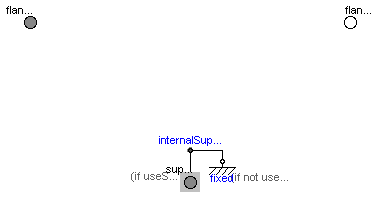
This element characterices any type of gear box which is fixed in the ground and which has one driving shaft and one driven shaft. The gear is ideal, i.e., it does not have inertia, elasticity, damping or backlash. If these effects have to be considered, the gear has to be connected to other elements in an appropriate way.
| Type | Name | Default | Description |
|---|---|---|---|
| Boolean | useSupport | false | = true, if support flange enabled, otherwise implicitly grounded |
| Real | ratio | Transmission ratio (flange_a.phi/flange_b.phi) |
| Type | Name | Description |
|---|---|---|
| Flange_a | flange_a | Flange of left shaft |
| Flange_b | flange_b | Flange of right shaft |
| Support | support | Support/housing of component |
model IdealGear "Ideal gear without inertia"
extends Rotational.Interfaces.PartialElementaryTwoFlangesAndSupport;
parameter Real ratio(start=1)
"Transmission ratio (flange_a.phi/flange_b.phi)";
Modelica.SIunits.Angle phi_a "Angle between left shaft flange and support";
Modelica.SIunits.Angle phi_b "Angle between right shaft flange and support";
equation
phi_a = flange_a.phi - internalSupport.phi;
phi_b = flange_b.phi - internalSupport.phi;
phi_a = ratio*phi_b;
0 = ratio*flange_a.tau + flange_b.tau;
end IdealGear;
 Modelica.Mechanics.Rotational.Components.LossyGear
Modelica.Mechanics.Rotational.Components.LossyGear
This component models the gear ratio and the losses of a standard gear box in a reliable way including the stuck phases that may occur at zero speed. The gear boxes that can be handeled are fixed in the ground, have one input and one output shaft, and are essentially described by the equations:
flange_a.phi = i*flange_b.phi (-flange_b.tau) = i*(eta_mf*flange_a.tau - tau_bf)
where
The loss terms "eta_mf" and "tau_bf" are functions of the absolute value of the input shaft speed w_a and of the energy flow direction. They are defined by parameter lossTable[:,5] where the columns of this table have the following meaning:
| |w_a| | eta_mf1 | eta_mf2 | |tau_bf1| | |tau_bf2| |
| ... | ... | ... | ... | ... |
| ... | ... | ... | ... | ... |
with
| |w_a| | Absolute value of angular velocity of input shaft flange_a |
| eta_mf1 | Mesh efficiency in case of input shaft driving |
| eta_mf2 | Mesh efficiency in case of output shaft driving |
| |tau_bf1| | Absolute bearing friction torque in case of input shaft driving |
| |tau_bf2| | Absolute bearing friction torque in case of output shaft driving |
With these variables, the mesh efficiency and the bearing friction are formally defined as:
if flange_a.tau*w_a > 0 or flange_a.tau==0 and w_a > 0 then
eta_mf := eta_mf1
tau_bf := tau_bf1
elseif flange_a.tau*w_a < 0 or flange_a.tau==0 and w_a < 0 then
eta_mf := 1/eta_mf2
tau_bf := tau_bf2
else // w_a == 0
eta_mf and tau_bf are computed such that der(w_a) = 0
end if;
Note, that the losses are modeled in a physically meaningful way taking into account that at zero speed the movement may be locked due to the friction in the gear teeth and/or in the bearings. Due to this important property, this component can be used in situations where the combination of the components Modelica.Mechanics.Rotational.IdealGear and Modelica.Mechanics.Rotational.GearEfficiency will fail because, e.g., chattering occurs when using the Modelica.Mechanics.Rotational.GearEfficiency model.
Acknowledgement: The essential idea to model efficiency in this way is from Christoph Pelchen, ZF Friedrichshafen.
For detailed information:
Pelchen C., Schweiger C., and Otter M.: "Modeling and Simulating the Efficiency of Gearboxes and of Planetary Gearboxes," in Proceedings of the 2nd International Modelica Conference, Oberpfaffenhofen, Germany, pp. 257-266, The Modelica Association and Institute of Robotics and Mechatronics, Deutsches Zentrum für Luft- und Raumfahrt e. V., March 18-19, 2002.
| Type | Name | Default | Description |
|---|---|---|---|
| Boolean | useSupport | false | = true, if support flange enabled, otherwise implicitly grounded |
| Real | ratio | Transmission ratio (flange_a.phi/flange_b.phi) | |
| Real | lossTable[:, 5] | [0, 1, 1, 0, 0] | Array for mesh efficiencies and bearing friction depending on speed |
| Type | Name | Description |
|---|---|---|
| Flange_a | flange_a | Flange of left shaft |
| Flange_b | flange_b | Flange of right shaft |
| Support | support | Support/housing of component |
model LossyGear
"Gear with mesh efficiency and bearing friction (stuck/rolling possible)"
extends Rotational.Interfaces.PartialElementaryTwoFlangesAndSupport;
parameter Real ratio(start=1)
"Transmission ratio (flange_a.phi/flange_b.phi)";
parameter Real lossTable[:, 5]=[0, 1, 1, 0, 0]
"Array for mesh efficiencies and bearing friction depending on speed";
Modelica.SIunits.Angle phi_a "Angle between left shaft flange and support";
Modelica.SIunits.Angle phi_b "Angle between right shaft flange and support";
Real sa(final unit="1") "Path parameter for acceleration and torque loss";
SI.AngularVelocity w_a "Angular velocity of flange_a";
SI.AngularAcceleration a_a "Angular acceleration of flange_a";
Real interpolation_result[1, size(lossTable, 2) - 1];
Real eta_mf1;
Real eta_mf2;
Real tau_bf1;
Real tau_bf2;
Real quadrant1;
Real quadrant2;
Real quadrant3;
Real quadrant4;
SI.Torque tauLoss
"Torque loss due to friction in the gear teeth and in the bearings";
SI.Torque tauLossMax "Torque loss for positive speed";
SI.Torque tauLossMin "Torque loss for negative speed";
Boolean tau_aPos(start=true) "true, if torque of flange_a is not negative";
Boolean startForward(start=false) "true, if starting to roll forward";
Boolean startBackward(start=false) "true, if starting to roll backward";
Boolean locked(start=false) "true, if gear is locked";
Boolean ideal "true, if losses are neglected";
constant Integer Unknown=3 "Value of mode is not known";
constant Integer Free=2 "Element is not active";
constant Integer Forward=1 "w_a > 0 (forward rolling)";
constant Integer Stuck=0
"w_a = 0 (forward rolling, locked or backward rolling)";
constant Integer Backward=-1 "w_a < 0 (backward rolling)";
Integer mode(
final min=Backward,
final max=Unknown,
start=Free,
fixed=true);
protected
constant SI.AngularAcceleration unitAngularAcceleration = 1;
constant SI.Torque unitTorque = 1;
function equal "Compare whether two Real matrices are identical"
extends Modelica.Icons.Function;
input Real A[:, :];
input Real B[:, :];
input Real eps=Modelica.Constants.eps
"two numbers r1, r2 are identical if abs(r1-r2) <= eps";
output Boolean result;
algorithm
result := false;
if size(A, 1) == size(B, 1) and size(A, 2) == size(B, 2) then
result := true;
for i in 1:size(A, 1) loop
for j in 1:size(A, 2) loop
if abs(A[i, j] - B[i, j]) >= eps then
result := false;
end if;
end for;
end for;
end if;
end equal;
equation
assert(abs(ratio) > 0,
"Error in initialization of LossyGear: ratio may not be zero");
ideal = equal(lossTable, [0, 1, 1, 0, 0]);
interpolation_result = if ideal then [1, 1, 0, 0] else
Modelica.Math.tempInterpol2(noEvent(abs(w_a)), lossTable, {2,3,4,5});
eta_mf1 = interpolation_result[1, 1];
eta_mf2 = interpolation_result[1, 2];
tau_bf1 = noEvent(abs(interpolation_result[1, 3]));
tau_bf2 = noEvent(abs(interpolation_result[1, 4]));
phi_a = flange_a.phi - internalSupport.phi;
phi_b = flange_b.phi - internalSupport.phi;
phi_a = ratio*phi_b;
// Torque balance (no inertias)
0 = flange_b.tau + ratio*(flange_a.tau - tauLoss);
// Speed for friction element
w_a = der(phi_a);
a_a = der(w_a);
quadrant1 = (1 - eta_mf1)*flange_a.tau + tau_bf1;
quadrant2 = (1 - 1/eta_mf2)*flange_a.tau + tau_bf2;
quadrant4 = (1 - 1/eta_mf2)*flange_a.tau - tau_bf2;
quadrant3 = (1 - eta_mf1)*flange_a.tau - tau_bf1;
// Torque Losses
tau_aPos = ideal or (flange_a.tau >= 0);
tauLossMax = if tau_aPos then quadrant1 else quadrant2;
tauLossMin = if tau_aPos then quadrant4 else quadrant3;
// Determine rolling/stuck mode when w_rel = 0
startForward = pre(mode) == Stuck and sa > tauLossMax/unitTorque or initial() and w_a
> 0;
startBackward = pre(mode) == Stuck and sa < tauLossMin/unitTorque or initial() and w_a
< 0;
locked = not (ideal or pre(mode) == Forward or startForward or pre(mode)
== Backward or startBackward);
/* Parameterized curve description a_a = f1(sa), tauLoss = f2(sa)
In comparison to Modelica.Mechanics.Rotational.FrictionBase it is possible
to simplify the following expression as mode == Stuck is assured in case
of startForward or startBackward */
tauLoss = if ideal then 0 else (if locked then sa*unitTorque else (if (startForward or
pre(mode) == Forward) then tauLossMax else tauLossMin));
a_a = unitAngularAcceleration*(if locked then 0 else sa - tauLoss/unitTorque);
/* Finite state machine to fix configuration after the computation above
The above equations are only dependent on pre(mode) and not on the actual
value of mode. This prevents loops. So mode can be determined in one step. */
mode = if ideal then Free else (if (pre(mode) == Forward or startForward)
and w_a > 0 then Forward else if (pre(mode) == Backward or startBackward)
and w_a < 0 then Backward else Stuck);
end LossyGear;
 Modelica.Mechanics.Rotational.Components.IdealPlanetary
Modelica.Mechanics.Rotational.Components.IdealPlanetary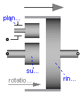
The IdealPlanetary gear box is an ideal gear without inertia, elasticity, damping or backlash consisting of an inner sun wheel, an outer ring wheel and a planet wheel located between sun and ring wheel. The bearing of the planet wheel shaft is fixed in the planet carrier. The component can be connected to other elements at the sun, ring and/or carrier flanges. It is not possible to connect to the planet wheel. If inertia shall not be neglected, the sun, ring and carrier inertias can be easily added by attaching inertias (= model Inertia) to the corresponding connectors. The inertias of the planet wheels are always neglected.
The icon of the planetary gear signals that the sun and carrier flanges are on the left side and the ring flange is on the right side of the gear box. However, this component is generic and is valid independantly how the flanges are actually placed (e.g. sun wheel may be placed on the right side instead on the left side in reality).
The ideal planetary gearbox is uniquely defined by the ratio of the number of ring teeth zr with respect to the number of sun teeth zs. For example, if there are 100 ring teeth and 50 sun teeth then ratio = zr/zs = 2. The number of planet teeth zp has to fulfill the following relationship:
zp := (zr - zs) / 2
Therefore, in the above example zp = 25 is required.
According to the overall convention, the positive direction of all vectors, especially the absolute angular velocities and cut-torques in the flanges, are along the axis vector displayed in the icon.
| Type | Name | Default | Description |
|---|---|---|---|
| Real | ratio | number of ring_teeth/sun_teeth (e.g. ratio=100/50) |
| Type | Name | Description |
|---|---|---|
| Flange_a | sun | Flange of sun shaft |
| Flange_a | carrier | Flange of carrier shaft |
| Flange_b | ring | Flange of ring shaft |
model IdealPlanetary "Ideal planetary gear box"
parameter Real ratio(start=100/50)
"number of ring_teeth/sun_teeth (e.g. ratio=100/50)";
// kinematic relationship
Interfaces.Flange_a sun "Flange of sun shaft";
Interfaces.Flange_a carrier "Flange of carrier shaft";
Interfaces.Flange_b ring "Flange of ring shaft";
equation
(1 + ratio)*carrier.phi = sun.phi + ratio*ring.phi;
// torque balance (no inertias)
ring.tau = ratio*sun.tau;
carrier.tau = -(1 + ratio)*sun.tau;
end IdealPlanetary;
 Modelica.Mechanics.Rotational.Components.Gearbox
Modelica.Mechanics.Rotational.Components.Gearbox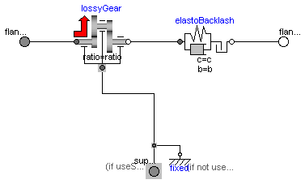
This component models the essential effects of a gearbox, in particular
The inertia of the gear wheels is not modeled. If necessary, inertia has to be taken into account by connecting components of model Inertia to the left and/or the right flange of component Gearbox.
| Type | Name | Default | Description |
|---|---|---|---|
| Boolean | useSupport | false | = true, if support flange enabled, otherwise implicitly grounded |
| Real | ratio | transmission ratio (flange_a.phi/flange_b.phi) | |
| Real | lossTable[:, 5] | [0, 1, 1, 0, 0] | Array for mesh efficiencies and bearing friction depending on speed (see docu of LossyGear) |
| RotationalSpringConstant | c | Gear elasticity (spring constant) [N.m/rad] | |
| RotationalDampingConstant | d | (relative) gear damping [N.m.s/rad] | |
| Angle | b | 0 | Total backlash [rad] |
| Advanced | |||
| StateSelect | stateSelect | StateSelect.prefer | Priority to use phi_rel and w_rel as states |
| Type | Name | Description |
|---|---|---|
| Flange_a | flange_a | Flange of left shaft |
| Flange_b | flange_b | Flange of right shaft |
| Support | support | Support/housing of component |
model Gearbox "Realistic model of a gearbox (based on LossyGear)"
extends Modelica.Mechanics.Rotational.Interfaces.PartialTwoFlangesAndSupport;
parameter Real ratio(start=1)
"transmission ratio (flange_a.phi/flange_b.phi)";
parameter Real lossTable[:, 5]=[0, 1, 1, 0, 0]
"Array for mesh efficiencies and bearing friction depending on speed (see docu of LossyGear)";
parameter SI.RotationalSpringConstant c(final min=Modelica.Constants.small, start=1.0e5)
"Gear elasticity (spring constant)";
parameter SI.RotationalDampingConstant d(final min=0, start=0)
"(relative) gear damping";
parameter SI.Angle b(final min=0) = 0 "Total backlash";
parameter StateSelect stateSelect=StateSelect.prefer
"Priority to use phi_rel and w_rel as states";
Modelica.SIunits.Angle phi_rel(start=0, stateSelect=stateSelect, nominal=1e-4)
"Relative rotation angle over gear elasticity (= flange_b.phi - lossyGear.flange_b.phi)";
Modelica.SIunits.AngularVelocity w_rel(start=0, stateSelect=stateSelect)
"Relative angular velocity over gear elasticity (= der(phi_rel))";
Modelica.SIunits.AngularAcceleration a_rel(start=0)
"Relative angular acceleration over gear elasticity (= der(w_rel))";
Rotational.Components.LossyGear lossyGear(final ratio=ratio, final lossTable=lossTable,
final useSupport=true);
Rotational.Components.ElastoBacklash elastoBacklash(
final b=b,
final c=c,
final phi_rel0=0,
final d=d);
equation
phi_rel = flange_b.phi - lossyGear.flange_b.phi;
w_rel = der(phi_rel);
a_rel = der(w_rel);
connect(flange_a, lossyGear.flange_a);
connect(lossyGear.flange_b, elastoBacklash.flange_a);
connect(elastoBacklash.flange_b, flange_b);
connect(lossyGear.support, internalSupport);
end Gearbox;
 Modelica.Mechanics.Rotational.Components.IdealGearR2T
Modelica.Mechanics.Rotational.Components.IdealGearR2T

(flangeR.phi - internalSupportR.phi) = ratio*(flangeT.s - internalSupportT.s);
| Type | Name | Default | Description |
|---|---|---|---|
| Boolean | useSupportR | false | = true, if rotational support flange enabled, otherwise implicitly grounded |
| Boolean | useSupportT | false | = true, if translational support flange enabled, otherwise implicitly grounded |
| Real | ratio | Transmission ratio (flange_a.phi/flange_b.s) [rad/m] |
| Type | Name | Description |
|---|---|---|
| Flange_a | flangeR | Flange of rotational shaft |
| Flange_b | flangeT | Flange of translational rod |
| Support | supportR | Rotational support/housing of component |
| Support | supportT | Translational support/housing of component |
model IdealGearR2T
"Gearbox transforming rotational into translational motion"
extends Rotational.Interfaces.PartialElementaryRotationalToTranslational;
parameter Real ratio(final unit="rad/m", start=1)
"Transmission ratio (flange_a.phi/flange_b.s)";
equation
(flangeR.phi - internalSupportR.phi) = ratio*(flangeT.s - internalSupportT.s);
0 = ratio*flangeR.tau + flangeT.f;
end IdealGearR2T;
 Modelica.Mechanics.Rotational.Components.IdealRollingWheel
Modelica.Mechanics.Rotational.Components.IdealRollingWheel
A simple kinematic model of a rolling wheel which has no inertia and no rolling resistance. This component defines the kinematic constraint:
(flangeR.phi - internalSupportR.phi)*wheelRadius = (flangeT.s - internalSupportT.s);
| Type | Name | Default | Description |
|---|---|---|---|
| Boolean | useSupportR | false | = true, if rotational support flange enabled, otherwise implicitly grounded |
| Boolean | useSupportT | false | = true, if translational support flange enabled, otherwise implicitly grounded |
| Distance | radius | Wheel radius [m] |
| Type | Name | Description |
|---|---|---|
| Flange_a | flangeR | Flange of rotational shaft |
| Flange_b | flangeT | Flange of translational rod |
| Support | supportR | Rotational support/housing of component |
| Support | supportT | Translational support/housing of component |
model IdealRollingWheel "Simple 1-dim. model of an ideal rolling wheel without inertia" extends Rotational.Interfaces.PartialElementaryRotationalToTranslational; parameter Modelica.SIunits.Distance radius(start=0.3) "Wheel radius"; equation (flangeR.phi - internalSupportR.phi)*radius = (flangeT.s - internalSupportT.s); 0 = radius*flangeT.f + flangeR.tau; end IdealRollingWheel;
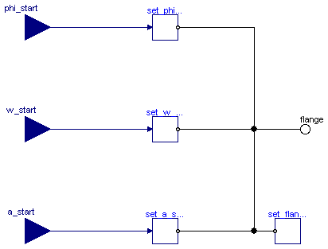
This component is used to optionally initialize the angle, speed, and/or angular acceleration of the flange to which this component is connected. Via parameters use_phi_start, use_w_start, use_a_start the corresponding input signals phi_start, w_start, a_start are conditionally activated. If an input is activated, the corresponding flange property is initialized with the input value at start time.
For example, if "use_phi_start = true", then flange.phi is initialized with the value of the input signal "phi_start" at the start time.
Additionally, it is optionally possible to define the "StateSelect" attribute of the flange angle and the flange speed via paramater "stateSelection".
This component is especially useful when the initial values of a flange shall be set according to reference signals of a controller that are provided via a signal bus.
| Type | Name | Default | Description |
|---|---|---|---|
| Boolean | use_phi_start | true | = true, if initial angle is defined by input phi_start, otherwise not initialized |
| Boolean | use_w_start | true | = true, if initial speed is defined by input w_start, otherwise not initialized |
| Boolean | use_a_start | true | = true, if initial angular acceleration is defined by input a_start, otherwise not initialized |
| StateSelect | stateSelect | StateSelect.default | Priority to use flange angle and speed as states |
| Type | Name | Description |
|---|---|---|
| input RealInput | phi_start | Initial angle of flange |
| input RealInput | w_start | Initial speed of flange |
| input RealInput | a_start | Initial angular acceleration of flange |
| Flange_b | flange | Flange that is initialized |
model InitializeFlange
"Initializes a flange with pre-defined angle, speed and angular acceleration (usually, this is reference data from a control bus)"
extends Modelica.Blocks.Interfaces.BlockIcon;
parameter Boolean use_phi_start = true
"= true, if initial angle is defined by input phi_start, otherwise not initialized";
parameter Boolean use_w_start = true
"= true, if initial speed is defined by input w_start, otherwise not initialized";
parameter Boolean use_a_start = true
"= true, if initial angular acceleration is defined by input a_start, otherwise not initialized";
parameter StateSelect stateSelect=StateSelect.default
"Priority to use flange angle and speed as states";
Modelica.Blocks.Interfaces.RealInput phi_start if use_phi_start
"Initial angle of flange";
Modelica.Blocks.Interfaces.RealInput w_start if use_w_start
"Initial speed of flange";
Modelica.Blocks.Interfaces.RealInput a_start if use_a_start
"Initial angular acceleration of flange";
Interfaces.Flange_b flange "Flange that is initialized";
Modelica.SIunits.Angle phi_flange(stateSelect=stateSelect)=flange.phi
"Flange angle";
Modelica.SIunits.AngularVelocity w_flange(stateSelect=stateSelect)= der(phi_flange)
"= der(phi_flange)";
protected
encapsulated model Set_phi_start "Set phi_start"
import Modelica;
extends Modelica.Blocks.Interfaces.BlockIcon;
Modelica.Blocks.Interfaces.RealInput phi_start "Start angle";
Modelica.Mechanics.Rotational.Interfaces.Flange_b flange;
initial equation
flange.phi = phi_start;
equation
flange.tau = 0;
end Set_phi_start;
encapsulated model Set_w_start "Set w_start"
import Modelica;
extends Modelica.Blocks.Interfaces.BlockIcon;
Modelica.Blocks.Interfaces.RealInput w_start "Start angular velocity";
Modelica.Mechanics.Rotational.Interfaces.Flange_b flange;
initial equation
der(flange.phi) = w_start;
equation
flange.tau = 0;
end Set_w_start;
encapsulated model Set_a_start "Set a_start"
import Modelica;
extends Modelica.Blocks.Interfaces.BlockIcon;
Modelica.Blocks.Interfaces.RealInput a_start "Start angular acceleration";
Modelica.Mechanics.Rotational.Interfaces.Flange_b flange(phi(stateSelect=StateSelect.avoid));
Modelica.SIunits.AngularVelocity w = der(flange.phi);
initial equation
der(w) = a_start;
equation
flange.tau = 0;
end Set_a_start;
encapsulated model Set_flange_tau "Set flange.tau to zero"
import Modelica;
extends Modelica.Blocks.Interfaces.BlockIcon;
Modelica.Mechanics.Rotational.Interfaces.Flange_b flange;
equation
flange.tau = 0;
end Set_flange_tau;
protected
Set_phi_start set_phi_start if use_phi_start;
Set_w_start set_w_start if use_w_start;
Set_a_start set_a_start if use_a_start;
Set_flange_tau set_flange_tau;
equation
connect(set_phi_start.phi_start, phi_start);
connect(set_phi_start.flange, flange);
connect(set_w_start.flange, flange);
connect(set_w_start.w_start, w_start);
connect(set_a_start.a_start, a_start);
connect(set_a_start.flange, flange);
connect(set_flange_tau.flange, flange);
end InitializeFlange;
 Modelica.Mechanics.Rotational.Components.RelativeStates
Modelica.Mechanics.Rotational.Components.RelativeStates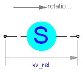
Usually, the absolute angle and the absolute angular velocity of Modelica.Mechanics.Rotational.Inertia models are used as state variables. In some circumstances, relative quantities are better suited, e.g., because it may be easier to supply initial values. In such cases, model RelativeStates allows the definition of state variables in the following way:
An example is given in the next figure

Here, the relative angle and the relative angular velocity between the two inertias are used as state variables. Additionally, the simulator selects either the absolute angle and absolute angular velocity of model inertia1 or of model inertia2 as state variables.
| Type | Name | Default | Description |
|---|---|---|---|
| StateSelect | stateSelect | StateSelect.prefer | Priority to use the relative angle and relative speed as states |
| Type | Name | Description |
|---|---|---|
| Flange_a | flange_a | Flange of left shaft |
| Flange_b | flange_b | Flange of right shaft |
model RelativeStates "Definition of relative state variables"
extends Rotational.Interfaces.PartialTwoFlanges;
parameter StateSelect stateSelect=StateSelect.prefer
"Priority to use the relative angle and relative speed as states";
SI.Angle phi_rel(start=0, stateSelect=stateSelect)
"Relative rotation angle used as state variable";
SI.AngularVelocity w_rel(start=0, stateSelect=stateSelect)
"Relative angular velocity used as state variable";
SI.AngularAcceleration a_rel(start=0) "Relative angular acceleration";
equation
phi_rel = flange_b.phi - flange_a.phi;
w_rel = der(phi_rel);
a_rel = der(w_rel);
flange_a.tau = 0;
flange_b.tau = 0;
end RelativeStates;
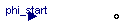
encapsulated model Set_phi_start "Set phi_start" import Modelica; extends Modelica.Blocks.Interfaces.BlockIcon; Modelica.Blocks.Interfaces.RealInput phi_start "Start angle"; Modelica.Mechanics.Rotational.Interfaces.Flange_b flange; initial equation flange.phi = phi_start; equation flange.tau = 0; end Set_phi_start;
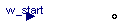
encapsulated model Set_w_start "Set w_start" import Modelica; extends Modelica.Blocks.Interfaces.BlockIcon; Modelica.Blocks.Interfaces.RealInput w_start "Start angular velocity"; Modelica.Mechanics.Rotational.Interfaces.Flange_b flange; initial equation der(flange.phi) = w_start; equation flange.tau = 0; end Set_w_start;
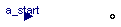
encapsulated model Set_a_start "Set a_start" import Modelica; extends Modelica.Blocks.Interfaces.BlockIcon; Modelica.Blocks.Interfaces.RealInput a_start "Start angular acceleration"; Modelica.Mechanics.Rotational.Interfaces.Flange_b flange(phi(stateSelect=StateSelect.avoid)); Modelica.SIunits.AngularVelocity w = der(flange.phi); initial equation der(w) = a_start; equation flange.tau = 0; end Set_a_start;
encapsulated model Set_flange_tau "Set flange.tau to zero" import Modelica; extends Modelica.Blocks.Interfaces.BlockIcon; Modelica.Mechanics.Rotational.Interfaces.Flange_b flange; equation flange.tau = 0; end Set_flange_tau;